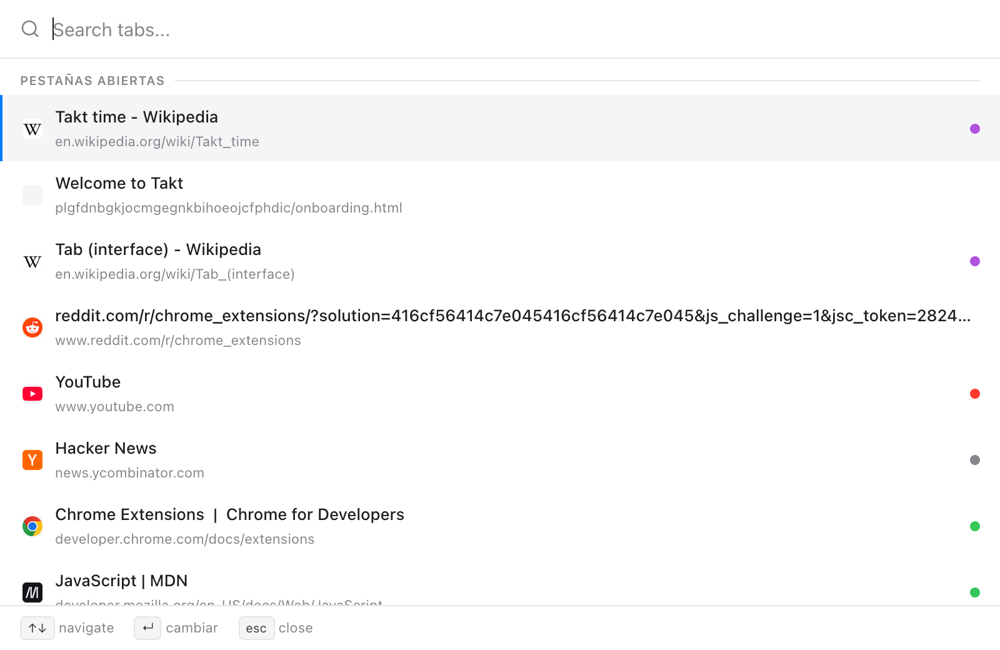
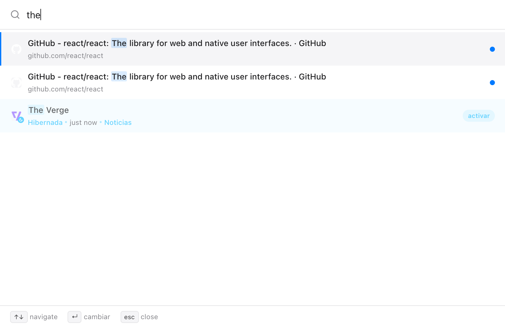
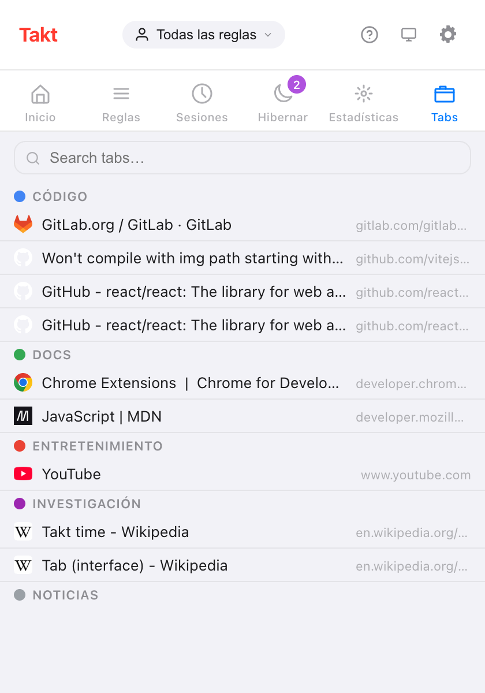

Respuesta corta: Alt+Shift+Space abre un cuadro de búsqueda sobre la página. Escribe, usa las flechas y pulsa Intro.
- Busca en las pestañas abiertas, en las hibernadas y en el historial de navegación si das permiso.
- También funciona en las páginas
chrome://, en una ventana pequeña. - Quick Switch es Premium (3 $/mes o 30 $/año). El cuadro de búsqueda del panel Tabs del popup es gratis.
¿Por qué cuesta tanto encontrar una pestaña?
A partir de unas 20 pestañas, la barra de pestañas de Chrome apenas muestra los favicons. Buscas por el icono, haces clic en la pestaña de GitHub equivocada y vuelves a probar.
Escribir es más rápido que mirar. Te acuerdas de "la pull request sobre la caché", no de en qué lugar de la barra está.
¿Cómo busco mis pestañas abiertas con el teclado?
- Pulsa Alt+Shift+Space. Se abre un cuadro de búsqueda sobre la página actual.
- Escribe cualquier parte del título o la URL. No distingue mayúsculas y minúsculas, y la lista se actualiza con cada tecla.
- Muévete con ↑ y ↓. Al llegar a un extremo, la selección vuelve al otro.
- Pulsa Enter para saltar. Takt enfoca la pestaña y pone su ventana delante.
Dos teclas más: Tab copia el título del resultado seleccionado en el cuadro de búsqueda, y Esc lo cierra. El cuadro también se cierra si haces clic fuera o cambias de ventana.

¿En qué busca Quick Switch?
| Origen | Cuándo aparece | Qué hace Intro |
|---|---|---|
| Pestañas abiertas | Siempre; primero las usadas más recientemente y la pestaña actual al final | Cambia a la pestaña |
| Pestañas hibernadas | Siempre, hasta 50 | Despierta la pestaña donde estaba |
| Historial | En cuanto escribes, con el permiso de historial; hasta 20 | La abre en una pestaña nueva |
El orden es fijo: pestañas abiertas, luego hibernadas y luego historial. El historial omite las páginas que ya están abiertas o hibernadas, y nunca muestra páginas chrome:// ni de extensiones.

Esa última fila es la razón de tener búsqueda e hibernación en la misma extensión. Puedes cerrar pestañas sin miedo a perderlas, porque escribir su nombre las trae de vuelta.
¿Funciona en las páginas chrome://?
Sí. Las extensiones no pueden dibujar sobre las páginas propias de Chrome, así que ahí Quick Switch se abre como una ventana de 560 × 480. Esto se aplica a las páginas chrome://, chrome-extension://, about: y chrome-untrusted:// y a Chrome Web Store. Las teclas son las mismas.
¿Hay alguna forma gratuita de buscar pestañas?
Sí: el panel Tabs del popup de Takt. Muestra todas las pestañas abiertas bajo su grupo de pestañas, con las que no tienen grupo en su propia sección. Escribe en el cuadro de búsqueda para filtrar por título o URL; Esc lo borra. Haz clic en una fila para enfocar esa pestaña y traer su ventana al frente.

| Panel Tabs del popup | Quick Switch | |
|---|---|---|
| Plan | Free | Premium |
| Cómo se abre | Haz clic en el icono de Takt y luego en Tabs | Alt+Shift+Space |
| Pestañas abiertas | Sí, por grupo | Sí, las más recientes primero |
| Pestañas hibernadas | No (tienen su propio panel) | Sí |
| Historial | No | Con permiso |
| Hace falta el ratón | Para abrir y elegir | No |
¿Puedo cambiar el atajo?
Sí. Ve a chrome://extensions/shortcuts, busca Takt, haz clic en el lápiz junto a Quick-switch y pulsa las teclas que quieras.
¿Se envía mi historial a algún sitio?
No. La búsqueda en el historial está desactivada hasta que concedes el permiso opcional de historial en Settings → Permisos. La búsqueda se hace dentro de Chrome, y puedes revocar el permiso en la misma página. Sin él, Quick Switch sigue buscando en las pestañas abiertas e hibernadas.
Lo que Quick Switch no hace
Busca exactamente las letras que escribes, en cualquier parte del título o la URL. No hay búsqueda aproximada, así que "gthub" no encuentra nada. Si un usuario del plan Free pulsa el atajo, no pasa nada; usa el panel Tabs en su lugar.
Deja de rebuscar entre favicons. Escribe el nombre de la pestaña.
Añadir Takt a ChromePreguntas frecuentes
¿Cuál es el atajo para buscar pestañas abiertas con Takt?
Alt+Shift+Space abre Quick Switch. Cámbialo en chrome://extensions/shortcuts.
¿Quick Switch funciona en las páginas chrome://?
Sí. En las páginas en las que no pueden ejecutarse extensiones, se abre en una ventana de 560 × 480 en lugar de sobre la página.
¿Hay alguna forma gratuita de buscar pestañas en Takt?
Sí. El panel Tabs del popup muestra las pestañas abiertas por grupo y tiene un cuadro de búsqueda. Quick Switch es Premium, por 3 $/mes o 30 $/año.
¿Quick Switch busca en mi historial de navegación?
Solo con el permiso opcional de historial. Los resultados del historial aparecen en cuanto escribes, hasta 20, y la búsqueda se hace dentro de Chrome.